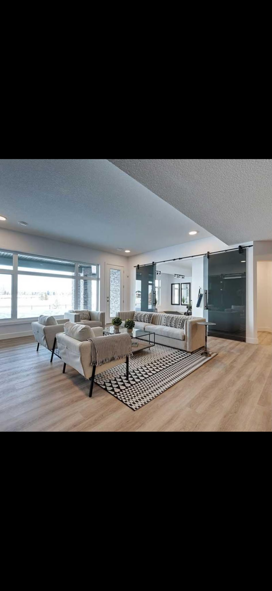

Built around your space
LVP fits active households and workspaces that need a resilient, easy-care surface.
What is included
- Residential and commercial installation
- Waterproof options
- Modern colors and textures
- Low-maintenance finishes
What to expect
We start with a consultation, provide a clear estimate, protect the surrounding space, complete the work carefully, and finish with a detailed walkthrough.
Common questions
How long will the project take?
Timing depends on size, preparation, material, and finish. Your estimate includes a project-specific schedule.
Can you help choose materials?
Yes. We explain durability, maintenance, moisture considerations, and style tradeoffs.